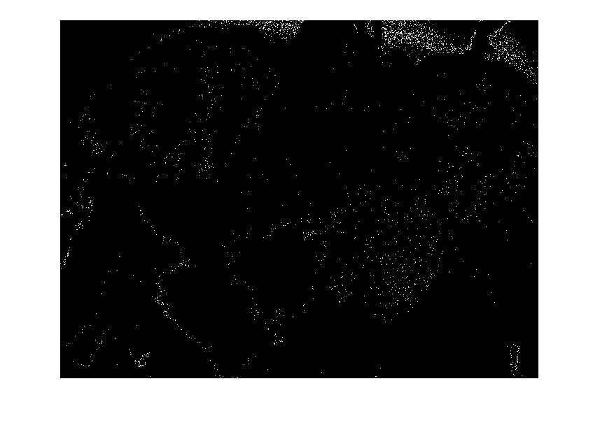
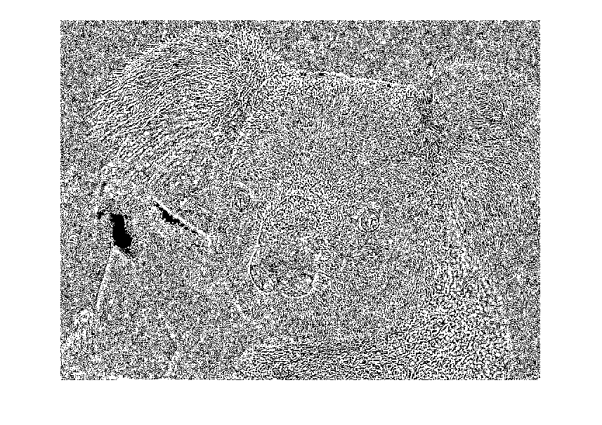
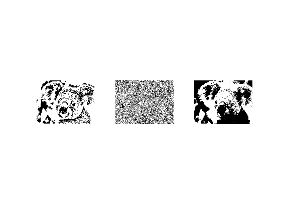

Contents
clear all; image = imread("Koala.jpg"); image_nois = imnoise(image, 'salt & pepper'); %zaszumienie obrazka zad 4 img_gray_nois = rgb2gray(image_nois); %imshow(image); % to gray img_gray = rgb2gray(image); img_hist = imhist(img_gray); %bar(img_hist); %imshow(img_gray); % binaryzacja TW = 116; %próg binaryzacji img_bin = img_gray > TW; %imshow(img_bin);
OTSU
Zadanie 1.1
% wyznaczanie progu binaryzacji metoda Otsu
th = graythresh(img_gray)*255;
Palety barw
Zadanie 1.2 colormap
img_cvt = cv.cvtColor(image, 'RGB2XYZ'); %zmiana palety barw Y = img_cvt(:, :, 2); %wybór palety jasności img_cvt_th = graythresh(Y)*255; %otsu obrazu img_cvt_bin = Y > img_cvt_th; %binaryzacja img_xor = bitxor(img_cvt_bin, img_bin); %xorowanie macierzy w celu znalezienia różnic imshow(img_xor); diffCount = sum(img_xor, 'all'); %suma elementów
Warning: Image is too big to fit on screen; displaying at 67%
Propagowanie adaptacyjne
Zadanie 1.3
progowanie funkcja cv.adaptiveThreshold
img_adapt_mean = cv.adaptiveThreshold(img_gray, 'BlockSize', 11); imshow(img_adapt_mean); % figure(2); img_adapt_gauss = cv.adaptiveThreshold(img_gray, 'Method', 'Gaussian', 'BlockSize', 11); imshow(img_adapt_gauss);
Warning: Image is too big to fit on screen; displaying at 67% Warning: Image is too big to fit on screen; displaying at 67%
Binaryzacja obrazu zaszumionego
Metoda Otsu
TW = 116; %próg binaryzacji img_bin_nois = img_gray_nois > TW; %imshow(img_bin_nois);
implementacja innych metod binaryzacji
%Zadanie 1.5 imshow(sauvola(img_gray,[100 100])) % figure(3); imshow(niblack(img_gray))
Warning: Image is too big to fit on screen; displaying at 67% Warning: Image is too big to fit on screen; displaying at 67%
Wynik
Metody Sauvola, Niblacka, Otsu
figure subplot(131) imshow(sauvola(img_gray,[100 100])) subplot(132) imshow(niblack(img_gray)) subplot(133) imshow(img_bin)